HISTORIA
Este centro educativo se fundó en febrero del año dos mil, fue como un regalo
del nuevo milenio para la comunidad de Las Brisas y sus cinco colonias que la
integran: Brisas uno, Brisas dos,El Higueral, Brisas tres y Anexo Las Brisas.
Esta comunidad se ubica en la parte noreste del municipio de San Pedro Sula,con
una población a ese año de 10,000 habitantes que en su mayoria viven en
condiciones de pobreza extremas principalmente la población que habita en los
bordos del rio bermejo y el rio de piedras.
El principal rubro de ingreso es la economía informal y el ingreso de los obreros
que trabajan en las diferentes maquilas del municipio.
El nombre de la institución se debe a que la principal
característica pedagógica es el área técnica en la que se
sirven varias opciones (electricidad, estructuras metálicas,
confección industrial y computación) es por eso lo de
Polivalente y su ubicación en la colonia del mismo nombre
(Las Brisas) que le provee de identidad comunal, en ese
marco se vislumbra una institución que brinde apoyo en los
trabajos informales de la zona y a los jóvenes que trabajaran
en las maquilas del municipio, a esa misma razón se debe
que institucionalmente se ha ido perfilando un docente con
las competencias necesarias para satisfacer esa demanda.
En el transcurso del año 1999 algunos miembros de los
patronatos de la zona tienen la intención de desarrollar
como proyecto municipal un Centro de Salud comunalen el
predio anexo a la escuela Rafael Pineda Ponce, por lo que
docentes de la escuela, con el apoyo de otros miembros
directivos de patronatos de la comunidad decidieron que lo
mejor era fundar una institución de educación media
haciendo de inmediato la propuesta a la directora
departamental en ese entonces licenciada Altagracia Sánchez.
En febrero del año dos mil la Lic. Sonia Figueroa subdirectora de la escuela Rafael Pineda Ponce
levantó la matricula inicial con setenta alumnos distribuidos en dos secciones de primero básico técnico
nombrándose a los profesores Douglas Ponce y Carminda Galeas en los cargos de asistente
de laboratorio de ciencias naturales y asistente de taller de hogar
quienes atendieron en primera instancia las dos secciones, posteriormente el profesor José Leonel Escoto
asume el cargo de subdirector quien fungió como director
por ley en el año dos mil y dos mil uno; y actualmente es el director del centro educativo.
Ya para finales de marzo se integran los profesores:
VISION
El Instituto Oficial Polivalente Las Brisas
será en los próximos años el mejor instituto
orientando y forjando a los jóvenes para
competir como profesionales de calidad
en su entorno laboral
MISION
Formar técnicamente y con un alto nivel
competitivo y de autogestin a nuestros
alumnos o alumnas para brindar a la
comunidad un profesional capaz de
transformar positivamente su entorno y por
ello ser vanguardia en el desarrollo
de Honduras.
EL PRINCIPIO DEL INSTITUTO
 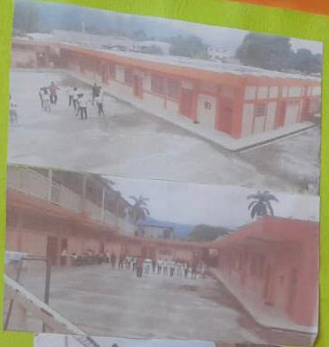
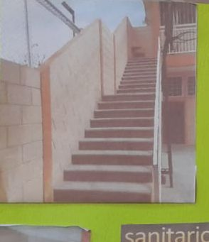
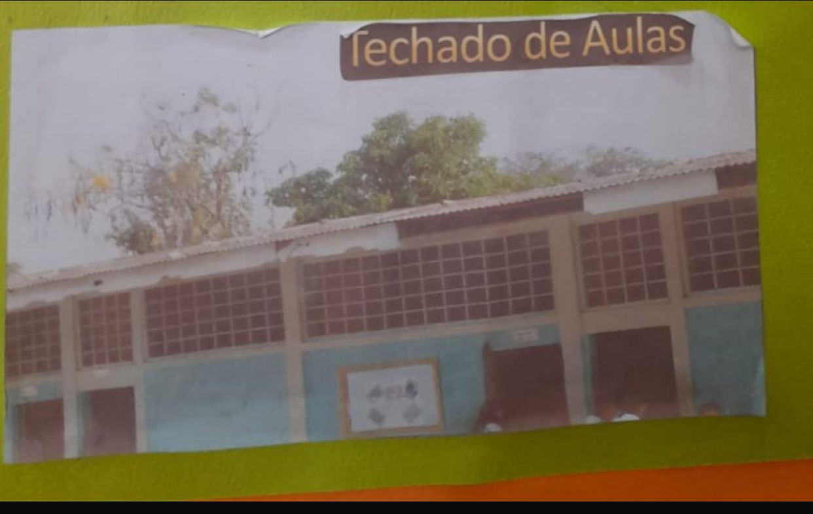
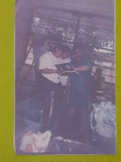
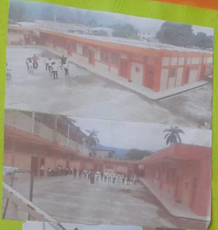
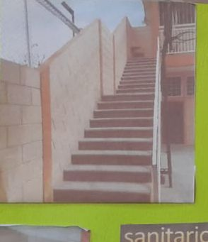
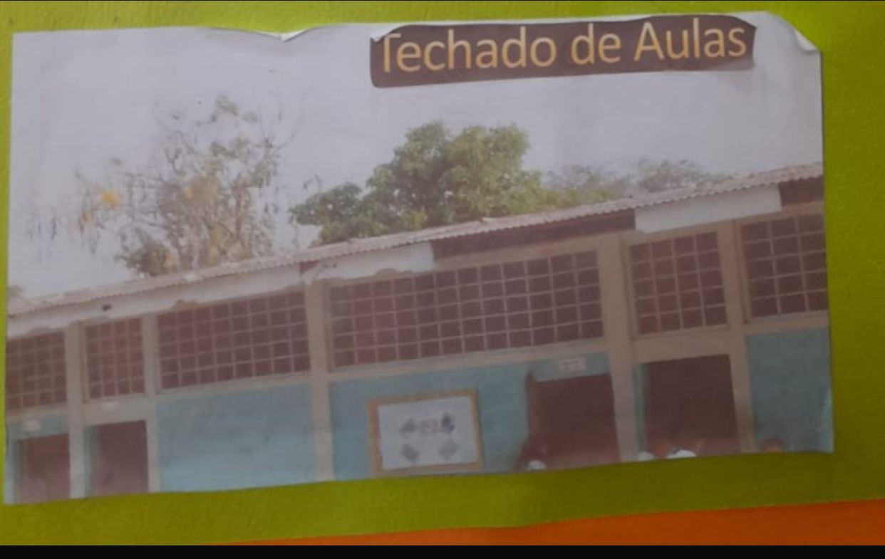
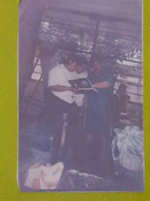INSTALACIONES ANTIGUAS

NUEVAS INSTALACIONES
 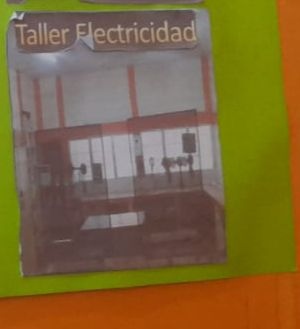
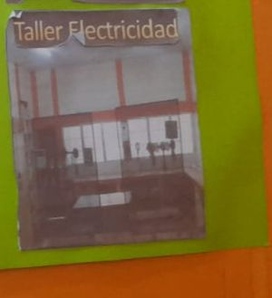
 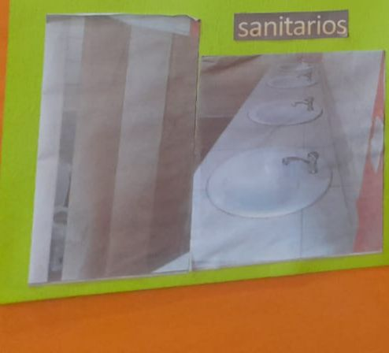
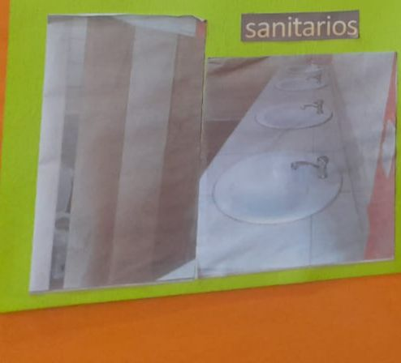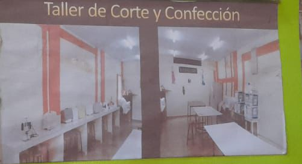